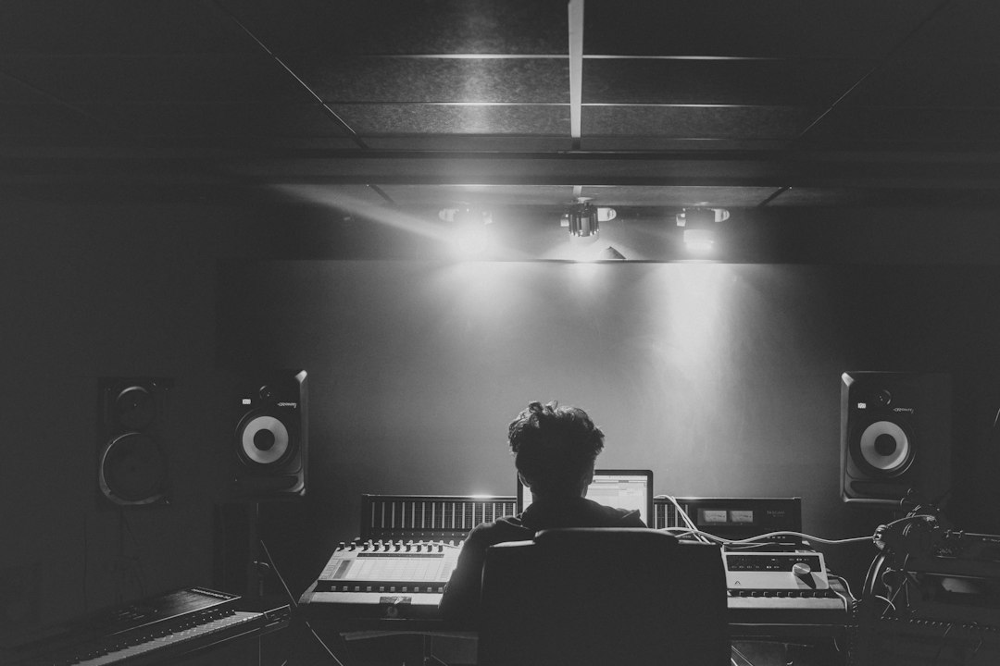

Automazione Audio: Come FF Edizioni Colma il Divario tra Metodi Manuali e Successo Competitivo

Automazione Audio: La Sfida Strategica per Aziende, Agenzie di Comunicazione, Emittenti Radio, Sposi e Regali
- Il gap competitivo cresce tra chi usa basi musicali royalty-free e chi sceglie soluzioni personalizzate e certificate.
- I costi nascosti di spot poco memorabili e identità acustica anonima penalizzano brand e campagne promozionali.
- FF Edizioni offre composizioni orchestrali inedite, firmate e certificate, trasformando la comunicazione audio in un asset strategico di brand.
Analisi Approfondita della Notizia e delle Implicazioni Operative
Nel panorama competitivo odierno, aziende, agenzie di comunicazione ed emittenti radio sono chiamate a differenziarsi in modo sempre più incisivo. Il punto di svolta si trova nella qualità e nell’unicità contenutistica, in particolare nella sfera audio, dove il ricorso a basi musicali anonime royalty-free o jingle generici diventa oggi un grave limite strategico. Il problema è duplice: da un lato l’omologazione sonora riduce la capacità di catturare l’attenzione del pubblico, dall’altro la mancanza di identità acustica rende fragili campagne pubblicitarie e branding.
FF Edizioni di RM Studio si inserisce in questo contesto come soluzione tecnologica avanzata, grazie a composizioni orchestrali inedite curate dal Maestro Fausto Fusetti, figura di riferimento con collaborazioni storiche di rilievo come quelle con Califano e Bongusto. Questo approccio permette una personalizzazione esclusiva della comunicazione sonora certificata SIAE, elemento chiave per consolidare l’identità di marca e ottenere risultati misurabili in campagne di marketing e customer engagement.
Le Conseguenze e i Costi di Non Agire
L’uso continuativo di basi musicali anonime royalty-free può sembrare una scelta economica e veloce, ma i costi nascosti spesso superano l’investimento iniziale ridotto. Gli spot pubblicitari risultano poco memorabili e si disperdono nel marasma di contenuti omologati, generando un basso ritorno sull’investimento pubblicitario e, in molti casi, un appiattimento del brand che perde terreno nei confronti della concorrenza più innovativa.
Inoltre, la mancanza di un’identità acustica efficace si traduce in limiti operativi nella fidelizzazione e nel posizionamento distintivo sul mercato. Per le emittenti radio, ad esempio, non possedere una colonna sonora riconoscibile rappresenta un deficit strategico che si riflette su ascolti e partnership pubblicitarie. Analogamente, per aziende e agenzie che curano il matrimonio tra brand e clienti (come nel settore Sposi e Regali), la comunicazione sonora crea un impatto emotivo fondamentale: un jingle mediocre difficilmente genera engagement o ricordo positivo.
Come FF Edizioni Risolve il Problema con Soluzioni su Misura
FF Edizioni si pone come partner tecnologico e creativo capace di superare i limiti della gestione tradizionale della comunicazione sonora. Le composizioni orchestrali inedite, realizzate dal Maestro Fausto Fusetti, consentono di offrire un prodotto unico, con certificazione d’autore SIAE che garantisce la tutela dei diritti e l’esclusività dell’operazione.
Questa proposta innovativa permette alle aziende, agenzie di comunicazione e emittenti radio di beneficiare di:
- Un’identità sonora distintiva basata su musiche inedite e personalizzate.
- Spot pubblicitari emozionali e memorabili capaci di incrementare il ROI delle campagne.
- Un’attività di branding potenziata, grazie a composizioni firmate da un maestro rinomato.
Il pricing estremamente competitivo, con canzoni inedite su misura a 300 € e jingle commerciali a 250 €, rende FF Edizioni accessibile anche per startup e PMI, offrendo un’alternativa di alta qualità rispetto al fai-da-te o all’acquisto di licenze passive per basi musicali anonime.
| Gestione Tradizionale | Con FF Edizioni |
|---|---|
| Basi musicali anonime royalty-free, senza personalizzazione | Composizioni orchestrali inedite, firmate e certificate con tutela SIAE |
| Spot poco memorabili e facilmente dimenticabili | Spot emozionali, unici e strategici per creare memorabilità |
| Nessuna identità acustica chiara e riconoscibile | Identità acustica solida che rafforza la brand equity |
| Processi manuali, dispendiosi in tempo e risorse | Automazione integrata con supporto creativo professionale |
| Rischio di controversie legali su copyright e licenze | Opere originali con certificazione formale di diritti d’autore |
💡 Ti è stato utile questo approfondimento?
Condividilo con un collega o un amico del settore Aziende, Agenzie di Comunicazione, Emittenti Radio, Sposi e Regali a cui potrebbe interessare!
FAQ: Domande Frequenti per Professionisti del Settore
1. Perché scegliere una composizione inedita invece di una base royalty-free?
Una composizione originale offre unicità, tutela legale e una forte identità di marca che basi anonime non possono garantire.
2. Come si certifica la paternità delle composizioni di FF Edizioni?
Tutte le composizioni sono firmate dal Maestro Fausto Fusetti e registrate con certificazione SIAE, garantendo diritti d’autore esclusivi.
3. Quali vantaggi porta l’automazione nella creazione di contenuti audio?
Consente di ridurre tempi, costi e margini di errore, offrendo un workflow integrato con soluzioni creative professionali.
Inizia Subito
Canzone Inedita su Misura a €300 o Jingle Commerciale a €250.
Fonti Ufficiali e Risorse Esterne
Scopri l'Intelligenza Artificiale per la tua attività
Ottimizza i processi e aumenta le vendite con le soluzioni B2B di RM Studio.
Scopri FF Edizioni